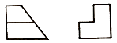
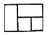
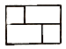
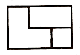
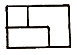
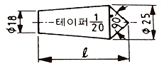
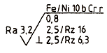
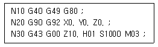

컴퓨터응용가공산업기사 (2016-03-06 기출문제)
1과목: 기계가공법 및 안전관리
1. 한계게이지의 종류에 해당되지 않는 것은?
- 봉게이지
- 스냅게이지
- 다이얼 게이지
- 플러그 게이지
(정답률: 77%)

2. 절삭공구 재료 중 소결 초경합금에 대한 설명으로 옳은 것은?
- 진동과 충격에 강하며 내마모성이 크다.
- Co, W, Cr 등의 주조하여 만든 합금이다.
- 충분한 경도를 얻기 위해 질화법을 사용한다.
- W, Ti, Ta 등의 탄화물 분말을 Co를 결합제로 소결한 것이다.
(정답률: 73%)
3. CNC 선반 프로그래밍에 사용되는 보조기능 코드와 기능이 옳게 짝지어진 것은?
- M01: 주축 역회전
- M02: 프로그램 종료
- M03: 프로그램 정지
- M04: 절삭유 모터가동
(정답률: 83%)
4. 밀링머신에서 원주를 단식분할법으로 13등분하는 경우의 설명으로 옳은 것은?
- 13구멍 열에서 1회전에 3구멍씩 이동한다.
- 39구멍 열에서 3회전에 3구멍씩 이동한다.
- 40구멍 열에서 1회전에 13구멍씩 이동한다.
- 40구멍 열에서 3회전에 13구멍씩 이동한다.
(정답률: 73%)
5. 밀링 작업시의 안전 수칙으로 틀린 것은?
- 칩을 제거할 때 기계를 정지시킨 후 브러시로 털어낸다.
- 주축 회전 속도를 변환 할 때에는 회전을 정지시키고 변환한다.
- 칩가루가 날리기 쉬운 가공물의 공작 시에는 방진 안경을 착용한다.
- 절삭유를 공급할 때 커터에 감겨들지 않도록 주의하고, 공작 중 다듬질 면은 손을 대어 거칠기를 점검한다.
(정답률: 92%)
6. 지름 10mm, 원추 높이 3mm인 고속도강 드릴로 두께가 30mm인 경강판을 가공할 때 소요시간은 약 몇 분 인가? (단, 이송은 0.3mm/rev, 드릴의 회전수는 667 rpm이다.)
- 6
- 2
- 1.2
- 0.16
(정답률: 40%)
7. 총형커터에 의한 방법으로 치형을 절삭할 때 사용하는 밀링커터는?
- 베벨 밀링커터
- 헬리켈 밀링커터
- 인벌류트 밀링커터
- 하이포이드 밀링커터
(정답률: 68%)
8. 1차로 가공된 가공물의 안지름보다 다소 큰 강구(steel ball)를 압입 통과시켜서 가공물의 표면을 소성변형으로 가공하는 방법은?
- 래핑(lapping)
- 호닝(honing)
- 버니싱(burnishing)
- 그라인딩(grinding)
(정답률: 69%)
9. 밀링머신에서 기어의 치형에 맞춘 기어커터를 사용하여, 기어소재 원판을 같은 간격으로 분할 가공하는 방법은?
- 래크법
- 창성법
- 총형법
- 형판법
(정답률: 50%)
10. 다듬질 면 상태의 평면 검사에 사용되는 수공구는?
- 트러멜
- 나이프 에지
- 실린더 게이지
- 앵글 플에트
(정답률: 70%)
11. 직접 측정용 길이 측정기가 아닌 것은?
- 강철자
- 사인 바
- 마이크로 미터
- 버니어켈리퍼스
(정답률: 83%)
12. 다음중 밀링작업에서 판캠을 절삭하기에 가장 적합한 밀링커터는?
- 엔드밀
- 더브테일 커터
- 메탈 슬리팅쏘
- 사이드 밀링 커터
(정답률: 63%)
13. 연삭숫돌의 입자의 종류가 아닌 것은?
- 에머리
- 코런덤
- 산화규소
- 탄화규소
(정답률: 57%)
14. 공작물의 표면 거칠기와 치수 정밀도에 영향을 미치는 요소로 거리가 먼 것은?
- 절삭유
- 절삭 깊이
- 절삭 속도
- 칩 브레이커
(정답률: 79%)
15. 리머의 모양에 대한 설명 중 틀린 것은?
- 조정 리머: 절삭 날을 조정할 수 있는 것
- 솔리드 리머: 자루와 절삭 날이 다른 소재로 된 것
- 셸 리머: 자루와 절삭 날 부위가 별개로 되어 있는 것
- 팽창 리머: 가공물의 치수에 따라 조금 팽창할 수 있는 것
(정답률: 70%)
16. 열경화성 합성수지인 베이크라이트(bakelite) 주성분으로 하며 가종 용제, 기름등에 안정된 숫돌로서 절단용 숫돌 및 정밀 연삭용으로 적합한 결합제는?
- 고무 결합제
- 비닐 결합제
- 셀락 결합제
- 레지노이드 결합제
(정답률: 78%)
17. 크레이터 마모에 관한 설명 중 틀린 것은?
- 유동형 칩에서 가장 뚜렷이 나타난다.
- 절삭공구의 상면 경사각이 오목하게 파여지는 현상이다.
- 크레이터 마모를 줄이려면 경사면 위의 마찰계수를 감소시킨다.
- 처음에 빠른 속도로 성장하다가 어느 정도 크기에 도달하면 느려진다.
(정답률: 66%)
18. 선반의 부속품 중에서 돌리개(dog)의 종류로 틀린것은?
- 곧은 돌리개
- 브로치 돌리개
- 굽은(곡형) 돌리개
- 평행(클램프) 돌리개
(정답률: 77%)
19. 편심량이 2,2 mm로 가공된 선반 가공물을 다이얼 게이지로 측정할 때, 다이얼 게이지 눈금의 변위량은 몇 mm 인가?
- 1.1
- 2.2
- 4.4
- 6.6
(정답률: 74%)
20. 선반작업시 공구에 발생하는 절삭 저항 중 가장 큰 것은?
- 배분력
- 주분력
- 마찰분력
- 이송분력
(정답률: 85%)
2과목: 기계설계 및 기계재료
21. 알루미늄 합금 중 주성분이 Al-Cu-Ni-Mg계 합금인 것은?
- Y합금
- 알민(Almin)
- 알드리(Aldrey)
- 알클래드(Alclad)
(정답률: 85%)
22. 자성재료를 연질과 경질로 나눌 때 경질 자석에 해당되는 것은?
- Si강판
- 퍼멀로이
- 센더스트
- 알니코 자석
(정답률: 67%)
23. 애드미럴티(admiralty) 황동의 조성은?
- 7:3 황동 + Sn(1% 정도)
- 7:3 황동 + Pb(1% 정도)
- 6:4 황동 + Sn(1% 정도)
- 6:4 황동 + Pb(1% 정도)
(정답률: 58%)
24. 초소성을 얻기 위한 조직의 조건으로 틀린 것은?
- 결정립은 미세화 되어야 한다.
- 결정립 모양은 등축이어야 한다.
- 모상의 입계는 고경각인 것이 좋다.
- 모상 입계가 인장 분리되기 쉬워야 한다.
(정답률: 57%)
25. 탄소공구강의 재료 기호로 옳은 것은?
- SPS
- STC
- STD
- STS
(정답률: 84%)
26. 탄성한도를 넘어서 소성 변형을 시킨 경우에도 하중을 제거하면 원래상태로 돌아가는 성질을 무엇이라 하는가?
- 신소재 효과
- 초탄성 효과
- 초소성 효과
- 시효경화 효과
(정답률: 72%)
27. 백주철을 열처리로 넣어 가열해서 탈탄 또는 흑연화 하는 방법으로 제조된 것은?
- 회주철
- 반주철
- 칠드 주철
- 가단 주철
(정답률: 64%)
28. 다음 중 원소가 강재에 미치는 영향으로 틀린 것은?
- S: 절삭성의 향상시킨다.
- Mn: 황의 해를 막는다.
- H2: 유동성을 좋게 한다.
- P: 결정립을 조대화 시킨다.
(정답률: 61%)
29. 스프링강이 갖추어야 할 특성으로 틀린 것은?
- 탄성한도가 커야 한다.
- 마텐사이트 조직으로 되어야 한다.
- 충격 및 피로에 대한 저향력이 커야 한다.
- 사용도 중 영구변형을 일으키지 않아야 한다.
(정답률: 80%)
30. 열처리 목적을 설명한 것으로 옳은 것은?
- 담금질: 강을 A1 변태점까지 가열하여 연성을 증가 시킨다.
- 뜨임: 소성가공에 의한 내부응력을 증가시켜 절삭성을 향상시킨다.
- 풀림: 강의 강도, 경도를 증가시키고, 조직을 마텐자이트 조직으로 변태시킨다.
- 불림: 재료의 결정조직을 미세화하고, 기계적 성질을 개량하여 조직을 표준화 한다.
(정답률: 63%)
31. 원통롤러 베어링 N206(기본 동정격하중 14.2kN)이 600rpm으로 1.96kN의 베어링 하중을 받치고 있다. 이 베어링의 수명은 약 몇 시간인가? (단, 베어링 하중계수(fw)는 1.5를 적용한다.)
- 4200
- 4800
- 5300
- 5900
(정답률: 44%)
32. 지름 20mm 피치 2mm 3줄 나사를 1/2 회전하였을 때 이 나사의 진행거리는 몇 mm인가?
- 1
- 3
- 4
- 6
(정답률: 77%)
33. 다음 중 정숙하고 원활한 운전을 하고, 특히 고속 회전이 필요할 때 적합한 체인은?
- 사일런트 체인(Silient chain)
- 코일 체인(Coil chain)
- 롤러 체인(Roller Chain)
- 블록 체인(Block Chain)
(정답률: 79%)
34. 밴드 브레이크에서 밴드에 생기는 인장응력과 관련하여 다음 중 옳은 관계식은? (단, σ :밴드에 생기는 인장응력, F1: 밴드의 인장측장력, t: 밴드 두께, b: 밴드의 너비이다.)
- σ = b F1xt
- b = tXσ / F1
- b = F1 / txσ
- σ = F1xt / b
(정답률: 45%)
35. 하중의 크기 및 방향이 주기적으로 변화하는 하중으로서 양진하중을 의미하는 것은?
- 변동하중 (Variable load)
- 반복하증 (Repeated load)
- 교번하중 (alternate load)
- 충격하중 (impact load)
(정답률: 67%)
36. 300rpm 2.5kW의 동력을 전달시키는 축에 발생하는 비틀림 모멘트 약 몇 N∙m 인가?
- 80
- 60
- 45
- 35
(정답률: 35%)
37. 2.2kw의 동력을 1800rpm으로 전달시키는 표준 스퍼기어가 있다. 이 기어에 작용하는 회전력은 약 몇 N인가? (단, 스퍼기어 모듈 4 이고, 잇수는 25 이다.)
- 163
- 195
- 233
- 289
(정답률: 44%)
38. 판 스프링(Leaf Spring)의 특징에 관한 설명으로 거리가 먼 것은?
- 판 사이의 마찰에 의해 진동을 감쇠한다.
- 내구성이 좋고 유지 보수가 용이하다.
- 트럭 및 철도 차량의 현가장치로 주로 이용된다.
- 판 사이의 마찰 작용으로 인해 미소진동의 흡수에 유리하다.
(정답률: 61%)
39. 맞대기 용접이음에서 압축하중을 W, 용접부의 길이를 l, 판 두께를 t라 할떄, 용접부의 압축 응력을 계산하는 식으로 옳은 것은?
- σ = Wt / l
- σ = W / tl
- σ = Wlt
- σ = tl / W
(정답률: 65%)
40. 942 N∙m 의 토크를 전달하는 지름 50mm인 축에 사용할 묻힘 키(폭x높이=12mmx8mm)의 길이는 최소 몇 mm 이상이어야 하는가? (단, 키의 허용전단응력은 78.48N/mm2 이다.)
- 30
- 40
- 50
- 60
(정답률: 49%)
3과목: 컴퓨터응용가공
41. 솔리드 모델링 기법에 의한 물체의 표현방식 중 CSG(Constructive Solid Geometry)방식이 B-rep(Boundary Representation) 방식에 비해 우수한 점으로 틀린 것은?
- 기억용량이 적다.
- 데이터 구조가 간단하다.
- 3면도나 투시도의 작성이 용이하다.
- 기본도형을 직접 입력하므로 데이터의 작성방법이 쉽다.
(정답률: 45%)
42. CNC 공작기계의 군관리 또는 군제어를 뜻하는 말로써 중앙의 컴퓨터로부터 프로그램을 CNC 공작기계에 전송하여 여러대의 CNC 공작기계를 동시에 제어하는 CNC 공작기계를 동시에 제어하는 시스템은?
- CIM
- DNC
- FMC
- FMS
(정답률: 85%)
43. 유한 요소법 (FEM)의 적용을 위한 3차원 요소 분할을 위해 가장 적당한 모델링 방법은?
- 곡면 모델링(Surface modeling)
- 솔리드 모델링(solid modeling)
- 시뮬레이션 모델링(simulation modeling)
- 와이어프레임 모델링(wireframe modeling)
(정답률: 74%)
44. 일반적으로 3축 가공과 비교한 5축 가공의 특징으로 틀린 것은?
- 공구 접근성이 뛰어나다.
- 파트 프로그램 작성이 수월하다.
- 커스프(cusp) 양을 최소화 함으로써 가공품질이 우수하다.
- 볼 엔드밀 사용시 절삭성이 좋은 공구 자세를 취할수 있다.
(정답률: 72%)
45. 퍼거슨(Ferguson)곡선과 곡면의 특징으로 틀린것은?
- 평면상의 곡선뿐만 아니라 3차원 공간에 있는 형상도 간단히 표현할 수 있다.
- 다각형의 꼭지점의 순서를 거꾸로 하여 곡선을 생성하여도 같은 곡선이 생성된다.
- 곡선 또는 곡면의 일부를 표현하려고 할 때는 매개 변수의 범위를 조절하여 간단히 표현 할 수 있다.
- 일반 대수식에 비해 곡성 생성이 쉽긴 하지만, 백터의 변화에 대해 백터 중간부의 곡선 형태를 예측하여 원하는 특징 형상을 표현하는 데에 어려움이 있다.
(정답률: 49%)
46. 일반적인 CAD 시스템에서 많이 사용하는 곡선의 방정식의 차수가 3차인 이유로 가장 적절한 것은?
- 곡선의 전면에 떨림이 적어 평탄한 곡선을 만들어낼 수 있다.
- 곡선 방정식을 구성하는 계수의 계산이 편리하여 방정식을 구성하는 계수의 계산이 편리하여 방정식을 쉽게 구현할 수 있다.
- 곡선 방정식을 구성하는 계수의 변화에 따른 곡선형태의 변화를 미리 예측하기 쉽다.
- 두 개의 곡선을 연결할 때 양쪽 곡선이 모두 3차식이면 연결점에서 곡률 연속을 보장할수 있다.
(정답률: 54%)
47. B-spline 곡선을 보다 다양하게 표현하고 있는 곡선은?
- Bezier 곡선
- Spline 곡선
- NURBS곡선
- Ferguson곡선
(정답률: 68%)
48. 다음 중 변환 행렬과 관계없는 명령어는?
- Break
- Move
- Mirror
- Rotate
(정답률: 72%)
49. 서로 다른 CAD 시스템간에 설계정보를 교환하기 위한 표준 중립화일(Neutral File)이 아닌 것은?
- DXF
- GUI
- IGES
- STEP
(정답률: 70%)
50. 웹에서 사용할 수 있는 데이터 포맷 중 3차원 그래픽 데이터를 위한 것은?
- CGM
- DWF
- HTML
- VRML
(정답률: 50%)
51. 원근투영에 대한 설명으로 틀린 것은?
- 건축분야의 CAD/CAM에서 사용된다.
- 투영면과 관찰자와의 거리가 무한대인 경우이다.
- 투영의 결과가 실제 사람의 눈으로 보는 것과 비슷하다.
- 같은 길이의 물체라도 가까운 것을 크게. 먼 것을 작게 그린다.
(정답률: 68%)
52. 화면에 나타난 데이터를 확대하여 데이터의 일부분 만을 스크린에 나타낼 때 Viewport를 벗어나는 일정한 영역을 잘라버리는 것은?
- 매핑(mapping)
- 패닝(panning)
- 클리핑(clipping)
- 윈도잉(windowing)
(정답률: 65%)
53. 구멍이 없는 간단한 다면체의 경계를 표현하는 오일러 공식은? (단, V는 꼭지점의 수, E는 모서리의 수, F는 면의 수를 의미한다.)
- V - E - F = 2
- V + E - F = 2
- V - E + F = 2
- V + E + F = 2
(정답률: 59%)
54. CAD/CAM 시스템의 출력장치 중에서 충격식 프린터는?
- 도트 프린터
- 레이져 프린터
- 열전사 프린터
- 잉크젯 프린터
(정답률: 76%)
55. 폐곡선의 내부를 사이드 스텝 및 다운 스텝을 이용 하여 반복 가공하는 방법은?
- 윤곽 가공
- 잔삭 가공
- 펜슬 가공
- 포켓 가공
(정답률: 65%)
56. CAD/CAM작업의 일반적인 작업순서로 옳은 것은?
- part program (→) post processor (→) NC code (→) CL data
- part program (→) CL data (→) post processor (→) NC code
- part program (→) post processor (→) CL data (→) NC code
- part program (→) NC code (→) CL data (→) post processor
(정답률: 61%)
57. Bezier 곡선이 갖는 특징으로 틀린 것은?
- 조정점(Control Point)의 개수와 곡선식의 차수가 직결 되어 실제로 모든 조정점이 곡선의 형상에 영향을 준다.
- 복잡한 형상의 곡선생성을 위해 조정점의 수가 증가하게 되고 곡선 형상의 진동 등의 문제를 야기한다.
- 두 개의 인접한 Bezier 곡선의 연결점에서 접선 연속성과 곡률 연속성을 동시에 만족시키는 것 이 불가능하다.
- 모든 조정점이 곡선의 형상의 영향을 주므로 부분적 형상 변경을 위해 조정점을 옮기면 곡선 전체의 형상이 변경되는 문제가 발생한다.
(정답률: 57%)
58. 컴퓨터를 이용하는 CAD/ CAM 시스템의 활용방식으로 틀린 것은?
- 독립형
- 개인제어형 분산처리형
- 분산처리형
- 중앙통제형
(정답률: 57%)
59. 곡면 모델(surface model)의 일반적 특징으로 옳은 것은?
- 곡면의 면적 계산이 불가능하다.
- 와이어 프레임 보다 데이터 량이 적다.
- NC 공구경로 계산에 필요한 정보를 얻을 수 있다.
- 부피 및 관성모멘트와 같은 물리적 성질을 계산하기 쉽다.
(정답률: 55%)
60. Rapid Prototyping 방식 가운데 종이 형태의 재료를 레이저로 잘라 적층 시킨 후 불필요한 부분을 제거하여 시작품을 만드는 방식은?
- Stereo Lithography (SL)
- Solid Ground Cursing(SCG)
- Selective Laser Sintering(SLS)
- Laminated Object Manufacturing(LOM)
(정답률: 53%)
4과목: 기계제도 및 CNC공작법
61. 기하공차 중 단독 형체에 관한 것들로만 짝지어진 것은?
- 진직도, 평면도, 경사도
- 평면도, 진원도, 원통도
- 진직도, 동축도, 대칭도
- 진직도, 동축도, 경사도
(정답률: 69%)
62. 다음 축의 치수 중 최대 허용치수가 가장 큰 것은?
- ø45n7
- ø45g7
- ø45h7
- ø45m7
(정답률: 51%)
63. 실물에서 한 변의 길이가 25mm일 때, 척도 1:5도면에서 그 변이 그려진 길이와 그 변에 기입해야 할 치수를 순서대로 옳게 나열한 것은?
- 길이 : 5mm. 치수: 5
- 길이 : 5mm, 치수: 25
- 길이 : 25mm, 치수: 5
- 길이 : 25mm, 치수: 25
(정답률: 73%)
64. 가공방법의 기호 중 주조의 기호는?
- D
- B
- GB
- C
(정답률: 64%)
65. 다음 중 최대 죔새를 나타낸 것은? (단, 조립 전 치수를 기준으로 한다.)
- 구멍의 최대 허용치수 - 축의 최대 허용치수
- 축의 최소 허용치수 - 구멍의 최대 허용치수
- 축의 최대 허용치수 - 구멍의 최소 허용치수
- 구멍의 최소 허용치수 - 축의 최소 허용치수
(정답률: 72%)
66. 나사의 종류를 표시하는 다음 기호 중에서 미터사다리꼴 나사를 표시하는 것은?
- R
- M
- Tr
- UNC
(정답률: 80%)
67. 제1각법에 관한 설명으로 옳은 것은?
- 정면도 우측에 좌측면도가 배치된다.
- 정면도 아래에 저면도가 배치된다.
- 평면도 아래에 저면도가 배치된다.
- 정면도 위에 평면도가 배치된다.
(정답률: 65%)
68. 제 3각법으로 투상한 그림과 같은 정면도와 우측면도에 가장 적합한 평면도는?





(정답률: 49%)
69. 다음 도면에서 L로 표시된 부분의 길이(mm)는?

- 52.5
- 85
- 140
- 152.5
(정답률: 40%)
70. 표면의 결 도시기호가 그림과 같이 나타났을 때 설명으로 틀린 것은?

- 니켈-크롬 코팅이 적용되어있다.
- 가공 여유는 0.8 mm를 준다.
- 샘플링 길이 2.5mm 에서는 Rz 6.3 ~ 16 µm를 만족해야 한다.
- 투상면에 대해 대략 수직인 줄부늬 방향이다.
(정답률: 47%)
71. 위치에어 테이블에 미치는 부하로 인하여 피치가 30mm 인 이송나사가 2° 뒤틀리 때, 테이블 이동량은?
- 0.⑤5mm
- 0.167mm
- 0.254mm
- 0.345mm
(정답률: 56%)
72. 머시닝센터의 보조기능 중 틀린 것은?
- M00 : 프로그램 정지
- M06 : 공구교환
- M09 : 절삭유 ON
- M98 : 보조 프로그램 호출
(정답률: 80%)
73. 회전수 1000rpm, 이송 0.15mm/rev 인 경우 이송속도 F(mm/rev)는?
- 150
- 667
- 1500
- 6667
(정답률: 60%)
74. 드라이 런(dry run) 기능에 대한 설명으로 옳은 것은?
- 드라이 런 스위치가 ON되면 주축 회전수가 빨라진다.
- 드라이 런 스위치가 ON되면 급속속도가 최고속도로 바뀐다.
- 드라이 런 스위치가 ON되면 이송속도의 단위가 회전당 이송속도로 변한다.
- 드라이런 스위치가 ON되면 프로그램의 이송속도를 무시하고 조작판의 이송속도 값으로 바뀐다.
(정답률: 63%)
75. CNC공작 기계에서 백 래시(Back Lash)에 직접적인 영향을 미치는 기구는?
- 모터
- 베어링
- 커플링
- 볼 스크류
(정답률: 80%)
76. CNC프로그램 중 전개번호에 대한 설명으로 틀린 것은?
- 특정 블록을 탐색할 때 편리하다.
- 특별히 중요한 지령절에만 부여해도 상관없다.
- 프로그램들을 서로 구별 시키기 위해서 붙인다.
- 지령절의 첫머리에 어드레스 N과 숫자를 부여한다.
(정답률: 42%)
77. G97 S400 M03;에서 가공물의 지름이 90mm인 주축의 회전수는 몇 rpm인가?
- 400
- 500
- 600
- 700
(정답률: 66%)
78. 다음 머시닝센터 프로그램에서 N10블록의 G80에 대한 설명중 옳은 것은?

- 공구경 우측보정
- 고정 사이클 취소
- 공구경 보정 해제
- 공구길이 보정 해제
(정답률: 67%)
79. 프레스 금형의 다이와 펀치가공에 주로 사용되는 공작기계는?
- CNC 선반
- CNC 탭핑 머신
- CNC 지그보링 머신
- CNC 와이어 컷 방전 가공기
(정답률: 55%)
80. 공구기능 (T code) T0101의 설명으로 옳은 것은?
- 1번 공구의 1번 반복 수행
- 1번 공구의 1번 보정번호 수행
- 1번 공구의 1번 보정번호 취소
- 공구 보정 없이 1번 보정번호 선택
(정답률: 86%)